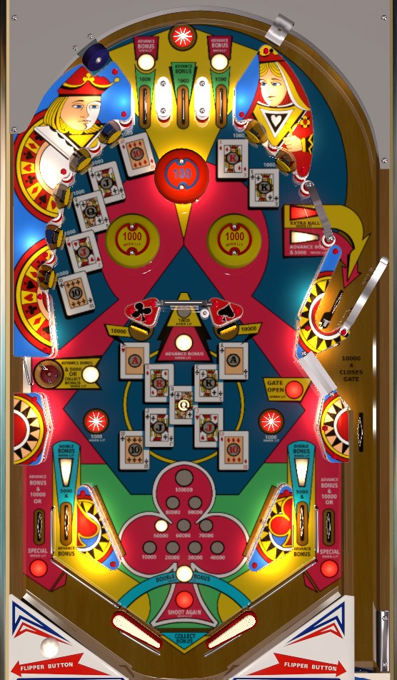

Build bonus with top lanes, in lanes, the lit spinner, and the kicker lane behind the upper right gate. From the left flipper, shoot toward the upper right gate, or the center spinner if it is lit for a bonus advance for 1,000 a spin (the latter only happens when bonus is maxed at 100,000). From the right flipper, shoot toward the upper left standup targets, or if both Jacks have been collected and bonus is high, shoot the lower left saucer to collect the bonus. The two Ace drop targets in the center of the table light in lanes alternately for double bonus; double bonus does not affect mid-ball bonus collects.
A short plunge can put the ball into the kicker behind the upper right gate. When this kicker is not lit, it scores absolutely nothing. Hitting any switch in the game lights this kicker for 5,000 points and a bonus advance for the rest of the ball.
The star rollover at the top of the playfield scores 100 points.
There are three top lanes. The outer two lanes score 1,000 points, and only one of the two will be lit for a bonus advance, alternating with each 100 point switch hit. The center lane scores 5,000 points and a guaranteed bonus advance. (The center lane is incorrectly coded and labelled as 1,000 points in some VPX recreations.) An ideal plunge ends up in the center lane for the chance of up-and-down action via the pop bumper.
There are 9 total playing cards to collect: one Queen, and two each of Ace, King, Jack, and 10. Every target that awards a card scores 1,000 points, except for the Ace drop targets, which score 10,000.
The 10 of diamonds and 10 of clubs are the targets on the two ends of the upper left bank. Collecting both lights the yellow pop bumpers for 1,000 points. Unlit yellow pop bumpers, and the always-lit orange pop bumper, score 100 points.
The jack of clubs and jack of hearts are the 2nd and 4th targets in the upper left bank. Collecting both lights the lower left saucer for a bonus collect. The bonus collect does NOT consider 2x bonus multiplier, whether it has been earned or not. Collecting the bonus resets it back to 10,000 points.
The queen of clubs is the middle target of the upper left bank. Collecting it lights the two lower star rollovers for 1,000 points instead of 100.
The kings of diamonds and clubs are the two targets in the upper right bank. Collecting both opens the lower right gate. Shooting through the gate scores 10,000 points, closes the gate, and puts the ball back into the shooter lane for a replunge. This lower gate can only be used once per ball. Ideally, the gate is only used after extra ball is lit, so that a short plunge into the kicker is guaranteed to score the extra ball.
The aces of hearts and clubs are the drop targets on either side of the center spinner/post structure. Hitting both drop targets lights one of the in lanes for double bonus, alternating with every 100 point switch hit. The ace drop targets only reset when the ball drains.
Collecting the regular straight (top left to bottom right) lights the kicker in the upper right for extra ball. The upper right gate that leads to the kicker is always open, and scores 5,000 points and a bonus advance as long as at least one switch his been hit during the current ball in play. It can also be accessed on a short plunge, such as after using the lower gate.
Collecting the straight flush with the five club cards (top right to bottom left) lights the out lanes alternately for special, alternating on 100 point switch hits.
The default spinner value is 100 points per spin. If the current bonus count is an odd number times 10,000, the spinner will be lit for a bonus advance; in this case, only the first spin of the spinner advances the bonus, and the rest just award the 100 points. If the current base bonus is maxed at 100,000 points, the spinner scores 1,000 points per spin instead of 100. Collecting the bonus unlights the spinner, reverting its value to 100 points.
Super Straight has a conventional in/out lane setup. In lanes score 5,000 points and a bonus advance, and are lit alternately for double bonus after both Ace drop targets are knocked down. Out lanes score 10,000 points and a bonus advance, and are lit alternately for special when the straight flush has been completed. Slingshots score 100 points.
A wider than normal gap between the rail that forms the in lane and the bottom of the slingshot means that post transfers are more difficult than normal, but shatzing/alley passing is more reliable as a technique for transferring the ball from one flipper to the other. The shape of the in lanes, though, means that shatzing/alley passing with the intent of triggering the in lane switches for points or bonus advances or double bonus does not work.
Each individual bonus advance is worth 10,000 points instead of a typical 1,000. Bonus is advanced by any in/out lane, lit spinner, lit upper right kicker, lit left/right top lane, and any center top lane. Bonus is doubled by hitting both Ace drop targets, then rolling through the lit in lane. Max bonus is 2x 100,000 = 200,000 points. Maxing the base bonus at 100,000 lights the spinner for 1,000 per spin. Collecting the two jacks lights the lower left saucer for a bonus collect, which collects the base bonus without multiplier and resets the base bonus.
I do not believe that extra balls or specials can be assigned a point value for competition/novelty play. Base bonus, bonus multiplier, and collected playing cards can never be carried forward from ball to ball.